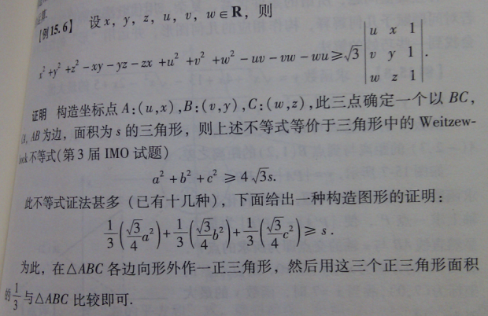
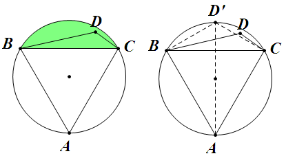
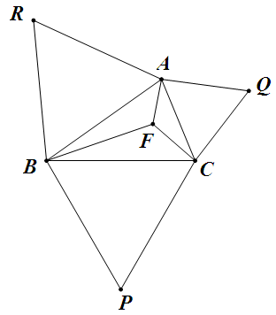

[不等式] 回复352的关于外森比克不等式的构图证明

三下五除二 23:46:41
这个是一本书里的，靠下面那个图形构造的，怎么比较三分之一和s的大小，我想半天没搞出来
首先有这样一个的简单引理：

(11.59 KB)
2013-1-16 14:32
如左图，$\triangle ABC$ 为正三角形，$D$ 在绿色部分区域上（含边界），则 $S_{\triangle ABC}\geqslant3S_{\triangle BCD}$。
其证明见右图。
回到原题，作出如书上所说的图形后，再分两类讨论。
（1）如果 $\triangle ABC$ 的三个内角都小于 $120^\circ$，则其费马点 $F$ 在其内部，连结 $FA$，$FB$，$FC$：

(10.05 KB)
2013-1-16 14:32
则 $A$、$R$、$B$、$F$ 四点共圆；$B$、$P$、$C$、$F$ 四点共圆；$C$、$Q$、$A$、$F$ 四点共圆。
因此由引理知 $S_{\triangle ABR}\geqslant3S_{\triangle ABF}$；$S_{\triangle BCP}\geqslant3S_{\triangle BCF}$；$S_{\triangle CAQ}\geqslant3S_{\triangle CAF}$，三式相加即得；
（2）如果 $\triangle ABC$ 某个内角大于或等于 $120^\circ$，则直接由引理可得。
|
本主题由 kuing 于 2013-1-19 14:52 分类

 发表于 2013-1-16 14:32
发表于 2013-1-16 14:32